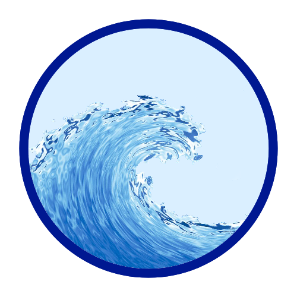
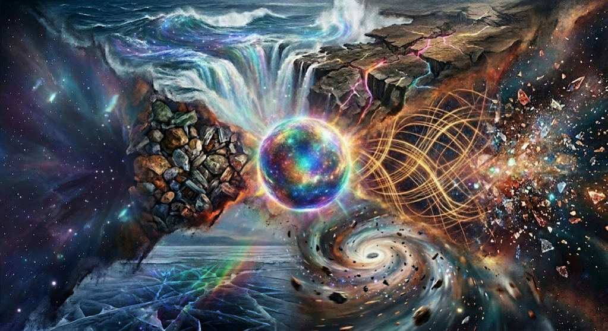
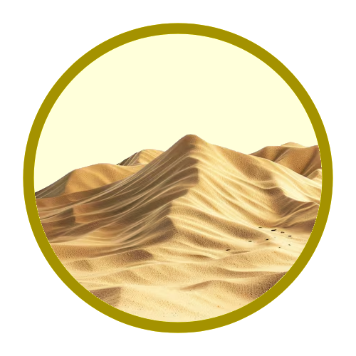
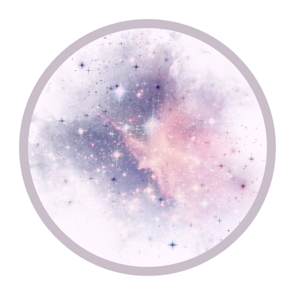
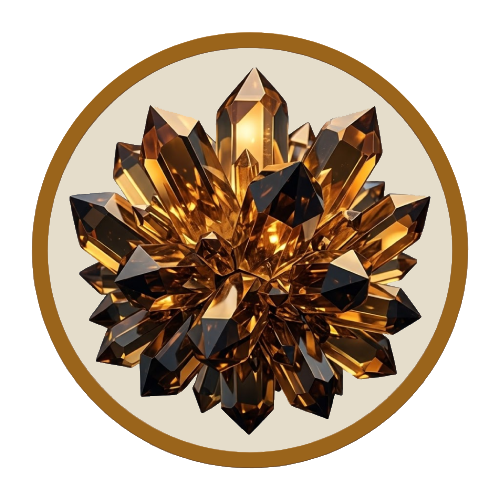
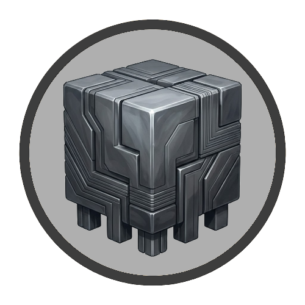
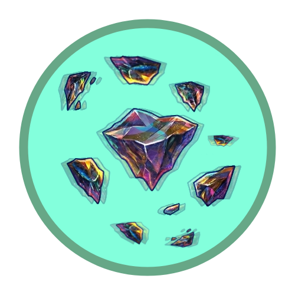
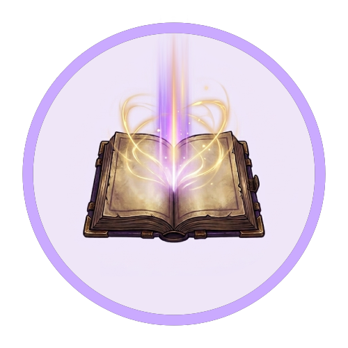

מים
אידיאל: שאיפה להרחיב את גופי המים. יקום של שטחי ים אדירים, נהרות ומעיינות שמציפים את המרחב.
קיצון: טייפונים בלתי פוסקים, יקום שכולו אוקיינוס ללא תחתית או יבשה מעבר לאופק.
לפרטים וגיוס: דני מור

היקום תלוי באיזון בין צירי הקיום: הגשמי, המרחבי, הדינמי והנרטיבי. כל ציר מורכב משני קונספטים מנוגדים המעצבים פן אחר של המציאות.
לכל רכיב יש אידיאל - הצורה ה"נכונה" של היקום, וקיצון - מה יקרה אם הציר יצא מאיזון.
המאבק על סביבת המחייה והנוף שנראה באופק.

אידיאל: שאיפה להרחיב את גופי המים. יקום של שטחי ים אדירים, נהרות ומעיינות שמציפים את המרחב.
קיצון: טייפונים בלתי פוסקים, יקום שכולו אוקיינוס ללא תחתית או יבשה מעבר לאופק.
לפרטים וגיוס: דני מור

אידיאל: שאיפה להגדיל את המסה היבשתית. יקום של רצפים טריטוריאליים עצומים ללא הפרדה.
קיצון: פעילות גיאולוגית אלימה, רעידות אדמה קבועות שמרסקות את פני השטח.
לפרטים וגיוס: מעין אסיסקוביץ'
המאבק על מידת ה"יש" לעומת ה"אין" ביקום.

אידיאל: שאיפה ליקום מבוזר, מלא בתהומות ללא תחתית ונהרות של כלום.
קיצון: אובדן החומר. המציאות הופכת ליקום ללא תוכן או רכיבים, חלל של מחסר וריק שבו יש רק כלום.
לפרטים וגיוס: אלון סטמפלר

אידיאל: שאיפה ליקום מלא וגדוש. בכל נקודה במרחב יש מהות פיזית ומשאבים.
קיצון: צפיפות יתר וחנק מחוסר מרחב, צביר של מסה דחוסה. קיום רציף ואחיד של חומר ללא מרווח.
לפרטים וגיוס: עדי יעקבסון
המאבק על היציבות מול השינוי, כבידה לעומת ריחוף.

אידיאל: שאיפה ליקום יציב, צפוי ומישורי שבו הכל מעוגן היטב לפני שטח.
קיצון: היקום הופך לדו-ממדי מרוב לחץ, הכל קורס תחת המשקל של עצמו ללא יכולת לנוע.
לפרטים וגיוס: עדן כהן

אידיאל: שאיפה ליקום סוער ודינמי, חלקים שלמים מהמרחב צפים ומשנים צורה.
קיצון: חוסר יציבות קיצוני, המציאות הופכת לחלקים מפוזרים בתנועה מתמדת ללא מקום לעצמם.
לפרטים וגיוס: עומר בן ארי
המאבק על משמעות המעשים והקשר בין עבר לעתיד.

אידיאל: שאיפה ליקום שבו לכל אירוע יש תכלית ידועה מראש. החיים הם סיפור כתוב ועלינו למלא את התפקיד שנועד לנו.
קיצון: אובדן מוחלט של הרצון החופשי. אין הפתעות או תקוות, רק ביצוע של תסריט קבוע.
לפרטים וגיוס: נועה מרימוביץ'
אידיאל: שאיפה ליקום שבו ההווה הוא חזות הכל. כל רגע הוא דף חלק
שנכתב בזמן אמת ללא תלות בהקשר.
קיצון: יקום של רגעים תלושים. אין קשר בין אתמול למחר, בו פעולות מובילות להשלכות לא צפויות.
לפרטים וגיוס: אוריה רוקח